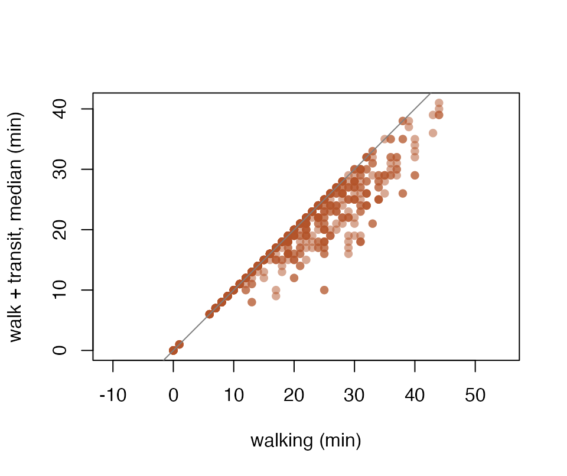

peabiru computes travel times and accessibility on transport networks built from an OpenStreetMap extract and GTFS public transport feeds, by walking, cycling, driving and public transport. The routing engine is written in Rust and runs inside the R session: no Java is needed, and the network is built once, in memory.
This vignette runs on the small network that ships with the package: the streets around Avenida Paulista in São Paulo, the city’s frequency-based bus and metro feed, and 27 points of a hexagonal grid. Every chunk below runs in a fraction of a second.
Build a network
A network is built from a directory holding one .pbf
file and any number of GTFS .zip files. It lives in memory
and is reused by every routing call.
data_path <- system.file("extdata/spo", package = "peabiru")
list.files(data_path)
#> [1] "spo_gtfs.zip" "spo_osm.pbf" "spo_points.csv"
network <- build_network(data_path, n_threads = 2)
network
#> <peabiru_network>
#> data path: /Users/leite/Github/peabiru-routing/.claude/scratch/sessao-1112/ns/rlib-015/peabiru/extdata/spo
#> streets: 2,609 vertices, 5,518 edges
#> transit: 1 feed(s) (spo_gtfs), 654 stops, 36 patterns, 6 services, frequency-based trips
#> elevation: NONEPoints are a data.frame with id,
lon and lat (or a POINT
sf object with an id column). Here the points
also carry opportunity counts, used for accessibility below.
points <- read.csv(file.path(data_path, "spo_points.csv"))
head(points)
#> id lon lat population schools jobs healthcare
#> 1 89a8100c00fffff -46.62896 -23.55631 3648 0 153 0
#> 2 89a8100c007ffff -46.63207 -23.55770 3936 0 551 0
#> 3 89a8100c077ffff -46.62887 -23.55325 6514 1 1124 0
#> 4 89a8100c03bffff -46.63198 -23.55464 3670 0 7112 0
#> 5 89a8100c033ffff -46.63508 -23.55603 893 0 3298 0
#> 6 89a8100c0afffff -46.63818 -23.55742 2185 0 1098 0Travel times on the street network
travel_time_matrix() with one street mode gives the
travel time in whole minutes from every origin to every destination;
pairs that cannot be reached within max_trip_duration (120
minutes by default) are left out.
walk <- travel_time_matrix(network, points, points, mode = "WALK",
n_threads = 2)
head(walk)
#> # A tibble: 6 × 3
#> from_id to_id travel_time_p50
#> <chr> <chr> <int>
#> 1 89a8100c00fffff 89a8100c00fffff 0
#> 2 89a8100c00fffff 89a8100c007ffff 7
#> 3 89a8100c00fffff 89a8100c077ffff 10
#> 4 89a8100c00fffff 89a8100c03bffff 8
#> 5 89a8100c00fffff 89a8100c033ffff 13
#> 6 89a8100c00fffff 89a8100c0afffff 23
bike <- travel_time_matrix(network, points, points, mode = "BICYCLE",
n_threads = 2)
car <- travel_time_matrix(network, points, points, mode = "CAR",
n_threads = 2)
sapply(list(walk = walk, bike = bike, car = car),
function(m) mean(m$travel_time_p50))
#> walk bike car
#> 19.696845 11.817558 7.462277The results are tibbles.
options(peabiru.output = "data.frame") makes every function
return base data frames instead, and
options(peabiru.output = "data.table")
data.tables; the rows, columns and values are the same
whatever the class. The article “peabiru
with sf and the tidyverse” goes from points to maps with sf, dplyr
and ggplot2.
Walking is at walk_speed (3.6 km/h by default). Cycling
is at bike_speed on streets whose level of traffic stress
is at most max_lts; elsewhere the cyclist walks the bike.
Driving uses each street’s speed, turn costs and turn restrictions.
Travel times by public transport
With mode = c("WALK", "TRANSIT") the trip combines
walking and public transport. A departure time is needed, and the result
summarises the trips that leave in each minute of
time_window as percentiles. This feed is frequency-based,
so the departures are simulated with random draws: give a
seed to make them reproducible.
departure <- as.POSIXct("2019-05-13 14:00:00", tz = "America/Sao_Paulo")
ttm <- travel_time_matrix(
network, points, points,
mode = c("WALK", "TRANSIT"),
departure_datetime = departure,
time_window = 10,
percentiles = c(25, 50, 75),
seed = 42,
n_threads = 2
)
head(ttm)
#> # A tibble: 6 × 5
#> from_id to_id travel_time_p25 travel_time_p50 travel_time_p75
#> <chr> <chr> <int> <int> <int>
#> 1 89a8100c00fffff 89a8100c00fff… 0 0 0
#> 2 89a8100c00fffff 89a8100c007ff… 7 7 7
#> 3 89a8100c00fffff 89a8100c077ff… 10 10 10
#> 4 89a8100c00fffff 89a8100c03bff… 8 8 8
#> 5 89a8100c00fffff 89a8100c033ff… 13 13 13
#> 6 89a8100c00fffff 89a8100c0afff… 23 23 23Walking all the way is one of the options considered, so here adding public transport never makes a trip longer; on this small network it shortens many of the longer ones:
both <- merge(walk, ttm, by = c("from_id", "to_id"),
suffixes = c("_walk", "_transit"))
mean(both$travel_time_p50_transit < both$travel_time_p50_walk)
#> [1] 0.3731139
plot(both$travel_time_p50_walk, both$travel_time_p50_transit,
xlab = "walking (min)", ylab = "walk + transit, median (min)",
pch = 16, col = "#b4532a80", asp = 1)
abline(0, 1, col = "grey50")
Accessibility
accessibility() counts the opportunities each origin can
reach. With the "step" function and two cutoffs, the result
is the number of jobs within 15 and within 30 minutes:
access <- accessibility(
network, points, points,
opportunities_colnames = "jobs",
mode = c("WALK", "TRANSIT"),
departure_datetime = departure,
decay_function = "step",
cutoffs = c(15, 30),
seed = 42,
n_threads = 2
)
head(access)
#> # A tibble: 6 × 5
#> id opportunity percentile cutoff accessibility
#> <chr> <chr> <int> <int> <dbl>
#> 1 89a8100c00fffff jobs 50 15 12452
#> 2 89a8100c00fffff jobs 50 30 95249
#> 3 89a8100c007ffff jobs 50 15 13914
#> 4 89a8100c007ffff jobs 50 30 110282
#> 5 89a8100c077ffff jobs 50 15 13099
#> 6 89a8100c077ffff jobs 50 30 110736The other decay functions ("exponential",
"fixed_exponential", "linear" and
"logistic") weight opportunities by travel time instead of
counting them.
Trip by trip
expanded_travel_time_matrix() keeps every trip instead
of a percentile: one row per departure minute and, with a
frequency-based feed, per draw. With breakdown = TRUE each
trip is split into its access walk, waiting, riding, transfers and
egress walk, with the routes taken.
trips <- expanded_travel_time_matrix(
network, points[1, ], points,
mode = c("WALK", "TRANSIT"),
departure_datetime = departure,
time_window = 2,
breakdown = TRUE,
seed = 42,
n_threads = 2
)
subset(trips, to_id == "89a8100c02fffff")
#> # A tibble: 10 × 12
#> from_id to_id departure_time draw_number access_time wait_time ride_time
#> <chr> <chr> <chr> <int> <dbl> <dbl> <dbl>
#> 1 89a8100c00f… 89a8… 14:00:00 1 14.7 1.5 1.9
#> 2 89a8100c00f… 89a8… 14:00:00 2 14.7 1.5 1.9
#> 3 89a8100c00f… 89a8… 14:00:00 3 14.7 1.6 1.9
#> 4 89a8100c00f… 89a8… 14:00:00 4 14.7 2 1.9
#> 5 89a8100c00f… 89a8… 14:00:00 5 14.7 2.3 1.9
#> 6 89a8100c00f… 89a8… 14:01:00 1 14.7 1.2 1.9
#> 7 89a8100c00f… 89a8… 14:01:00 2 14.7 1.2 1.9
#> 8 89a8100c00f… 89a8… 14:01:00 3 14.7 1.3 1.9
#> 9 89a8100c00f… 89a8… 14:01:00 4 14.7 1.6 1.9
#> 10 89a8100c00f… 89a8… 14:01:00 5 14.7 1.9 1.9
#> # ℹ 5 more variables: transfer_time <dbl>, egress_time <dbl>, routes <chr>,
#> # n_rides <int>, total_time <dbl>arrival_travel_time_matrix() answers the reverse
question: for each pair, the latest departure that still arrives by a
given time.
Writing results to files
For matrices too large to hold in memory, output_dir (an
existing directory) makes each of these functions write its result there
instead of returning it: one CSV file per origin,
from_<id>.csv. The origins are routed a slice at a
time, and the function returns output_dir.
out <- tempfile("peabiru-")
dir.create(out)
travel_time_matrix(network, points, points, mode = "CAR", n_threads = 2,
output_dir = out) == out
#> [1] TRUE
length(list.files(out))
#> [1] 27
head(read.csv(file.path(out, list.files(out)[1])), 3)
#> from_id to_id travel_time_p50
#> 1 89a8100c007ffff 89a8100c00fffff 4
#> 2 89a8100c007ffff 89a8100c007ffff 1
#> 3 89a8100c007ffff 89a8100c077ffff 3More
The package also computes isochrones (isochrone()), the
legs of each trip (detailed_itineraries()), fares
(setup_fare_structure(), pareto_frontier()),
slope costs from an elevation raster, and scenarios of car speeds and
traffic stress; it inspects networks with find_snap(),
street_network_to_sf(),
transit_network_to_sf(),
check_transit_availability() and
get_gtfs_errors(). The articles on the package website show
each of them.
What peabiru does not support is an error that says so, never ignored
or approximated: for instance a fare structure that names a fare
calculator (a type) instead of fare rules:
fares <- setup_fare_structure(network, base_fare = 4.4)
fares$type <- "burlington"
travel_time_matrix(network, points, points, mode = c("WALK", "TRANSIT"),
departure_datetime = departure, fare_structure = fares)
#> Error:
#> ! A fare structure with a 'type' (a named fare calculator instead of fare rules) is not supported by peabiru.The help page of each function lists its arguments and their defaults.